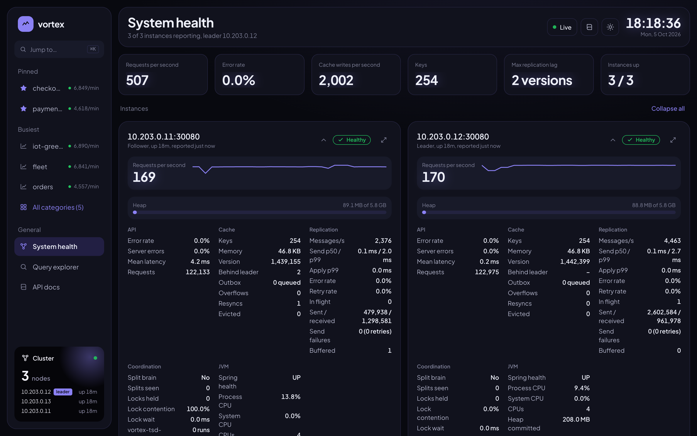
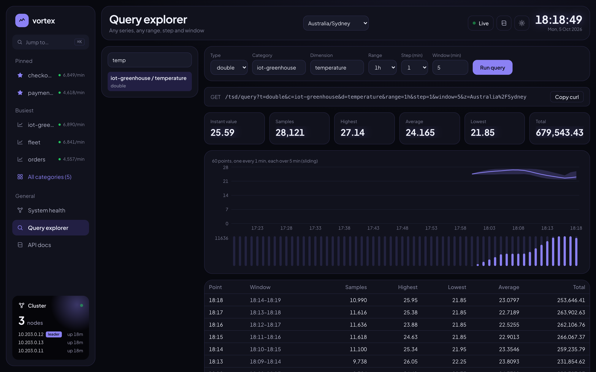

A time series database
that starts as a cluster.
Vortex TSDB is a lightweight, distributed time series database for real-time metrics. Write samples over HTTP; read per-minute aggregates, instant values, and tumbling or sliding windows. Every node holds a full replica in memory.
$ docker compose up -d # 3 nodes + gateway + console $ curl -X POST 'localhost:9080/tsd/push?t=long&c=car&d=speed&v=44' $ curl 'localhost:9080/tsd/query?t=long&c=car&d=speed&range=6h&step=5&window=15' { "step": 5, "window": 15, "last": { "value": 44 }, "points": [ { "count": 900, "highestValue": 131, "averageValue": 69.8 }, … ] }
Why Vortex?
Live metrics need exact counts, fast windows and a node that can die. They rarely need a storage engine and a query language.
One service, one command
A Spring Boot service and an optional Redis. ./run-docker.sh starts a whole cluster.
Exact without locks
Every write is applied on the leader, one at a time, then replicated as an operation.
Four HTTP parameters
range, step, window, z. Windows are folded from minute buckets at read time.
Full replica on every node
A new leader within 5 s after a crash; a graceful stop hands over at once.
Bounded memory
A per-node key limit; cold keys move to Redis and are read back on demand.
Features
Everything a real-time TSDB needs, except a query language.
Per-minute aggregates
Count, highest, lowest, total and average for long, double and decimal.
Tumbling & sliding windows
Any range up to the retention, any step, any window, aligned in the zone you ask for.
Instant values
The latest sample of every series; a whole category in one read.
Replicated cluster
Nodes find each other and elect a leader. Reads come from local memory on any node.
Snapshots
Written at shutdown and every 5 minutes. Restarts keep the data; expired buckets are dropped on load.
Redis overflow
Keys beyond VORTEX_CACHE_MAX_KEYS spill to Redis when one is configured.
Cluster health API
Per node QPS, error rate, cache, replication lag, leader and JVM at /tsd/health.
Gateway & OpenAPI
Traefik load-balances healthy nodes; Swagger UI documents every endpoint.
Legacy Vortex compatible
/tsd/push, /tsd/test and /tsd/retrieve keep their parameters and responses.
How it works
Writes are serialised on the leader and replicated as operations; reads fold minute buckets from local memory.
- Write: any node forwards a sample to the leader, which applies max, min, sum(+count) and the latest value to the minute bucket.
- Replicate: each operation is broadcast to every node, so every node holds the whole dataset.
- Read: the node that receives a query folds the buckets it covers from its own memory.
Quick start
Docker is all you need: the images come from Docker Hub, for amd64 and arm64.
curl -fsSLO https://raw.githubusercontent.com/paganini2008/vortex/main/deploy/docker-compose.yml docker compose up -d curl -X POST 'http://localhost:9080/tsd/push?t=long&c=car&d=speed&v=44' curl 'http://localhost:9080/tsd/last?t=long&c=car&d=speed'
| Entry point | URL |
|---|---|
| HTTP API | http://localhost:9080/tsd/… |
| Swagger UI | http://localhost:9080/swagger-ui.html |
| Web console | http://localhost:9080/ |
| Redis overflow (optional) | VORTEX_REDIS_HOST=… VORTEX_REDIS_PASSWORD=… docker compose up -d |
| From source | git clone …/vortex.git && ./run-docker.sh |
Examples
Every response is wrapped as {"code": 1, "msg": "ok", "data": …}; code is 0 on failure.
Three writes land in the same minute bucket; the instant value is the last one.
for v in 44 67 112; do curl -X POST "localhost:9080/tsd/push?t=long&c=car&d=speed&v=$v"; done curl 'localhost:9080/tsd/last?t=long&c=car&d=speed' → {"value": 112, "timestamp": 1791090941234} curl 'localhost:9080/tsd/retrieve?t=long&c=car&d=speed&z=Asia/Shanghai' → "09:29:00": {"count": 3, "highestValue": 112, "lowestValue": 44, "totalValue": 223, "averageValue": 74.3333}
Six hours, a point every 5 minutes, each folding the 15 minutes before it. step = window gives tumbling windows.
curl 'localhost:9080/tsd/query?t=long&c=car&d=speed&range=6h&step=5&window=15&z=Asia/Shanghai' → { "range": "6h", "step": 5, "window": 15, "last": {"value": 61}, "summary": {"count": 21540, "highestValue": 140, "lowestValue": 1, "averageValue": 70.02}, "points": [{"from": 1791069300000, "to": 1791070200000, "count": 900, "averageValue": 69.8}, …] }
All series of a category in one call, and the catalog of categories, busiest first.
curl 'localhost:9080/tsd/category?c=car&range=1h' curl 'localhost:9080/tsd/categories' → [{"category": "car", "series": 4, "lastSeen": 1791090941234, "samplesPerMinute": 3600.0}, …] curl 'localhost:9080/tsd/series'
Every node's API rates, cache, replication and JVM, served from replicated memory by any node.
curl 'localhost:9080/tsd/health' → { "leader": "10.230.0.11", "maxReplicationLag": 0, "instances": [{ "host": "10.230.0.11", "leader": true, "http": {"qps": 642.4, "errorRate": 0.0, "avgLatencyMs": 1.8}, "jvm": {"heapUsed": 214958080, "processCpu": 0.41}, … }, …] }


Performance
Writes are serialised on the leader: throughput is bounded by one node, consistency is exact.
kill -9| Vortex TSDB | Prometheus | InfluxDB | TimescaleDB | |
|---|---|---|---|---|
| Writes | HTTP push | Periodic pull | HTTP push | SQL |
| Queries | HTTP parameters | PromQL | InfluxQL / SQL | SQL |
| Storage | In-memory replicas + snapshots | Local disk | Disk | PostgreSQL |
| High availability | Built in | Extra setup | By edition | PostgreSQL tooling |
| Best for | Real-time metrics, days of retention | Monitoring & alerting | General time series | Long-term analytics |
Measured on Docker Desktop (4 CPUs, 8 GB), 3 nodes, k6 through the Traefik gateway. Leader killed at 600 samples/s: 0.28% of requests failed, all at the moment of the kill.
Documentation
The README is the reference; the posts walk through the design.
Getting started
Run a cluster on Docker and push the first sample.
Read →API reference
Push, retrieve, last, query, category, categories, series, cluster, health.
Read →Configuration
Every VORTEX_* setting, per component .env file.
Architecture
Buckets, catalog, replication, snapshots and overflow.
Read →Limits
Write ceiling, failover, durability and precision, measured.
Read →Blog post
The design end to end, in English and 中文.
Read →Open source
Apache 2.0. Bug reports, ideas and pull requests are welcome.